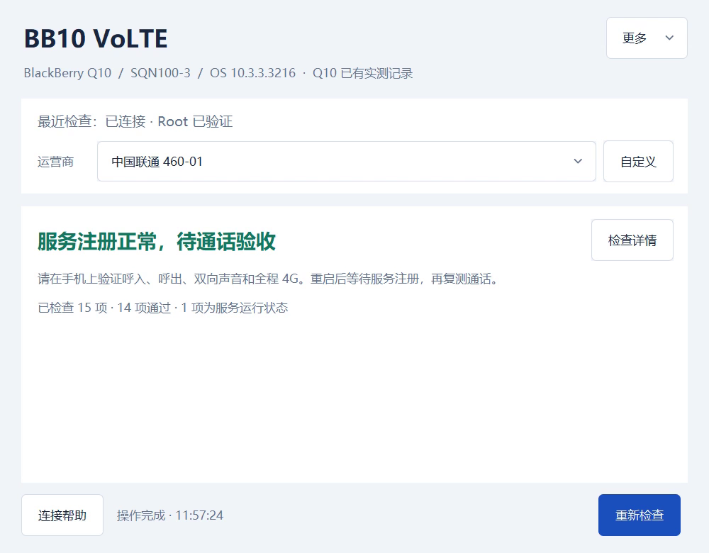

你的 SIM 卡
继续用自己的号码和套餐。
SIM 卡需要已开通 VoLTE。
BLACKBERRY 10 · NATIVE VOLTE
首次连接 Windows 或 Mac 安装一次。以后关机换卡、正常开机，手机自动适配移动、联通、电信，不用再连电脑刷机。继续用自己的号码和手机自带的拨号器，在 4G 下接打电话。
下载 macOS 通用版v0.5.0-r8 · 实验版。适用于已 Root 的 SQN100-3 / SQC100-2 / SQW100-4，系统 10.3.3.3216。Passport 切入或离开电信时，可能需要再正常重启一次。

VoLTE 就是通过运营商的 4G 网络打电话。
这个工具尝试启用 BB10 已有的通话能力，
不是免费电话，也不提供网络电话账号。
继续用自己的号码和套餐。
SIM 卡需要已开通 VoLTE。
启用 BB10 自带的 IMS 服务。
先校验文件，再在独立副本上修改。
还是手机自带的拨号界面。
按运营商套餐计费。
Root 是手机的系统管理员权限。需要它来启用 VoLTE，但不用拆机，也不用另装拨号 App。
不会覆盖原厂 /radio/bin/ims_rrm。安装前会校验原生文件，确保与项目要求一致。
安装前会检查机型、系统、SIM 卡、4G 网络和网络配置。关键条件不符合，就会停止。
电脑负责连接、检查和安装。
是否真的能用，
要在手机上接打电话才能确定。
使用可信 USB 连接，核对准确硬件型号。
进入“三网自动适配”，备份并安装，然后按提示正常重启。
正常关机换卡，再开机。Passport 切入或离开电信时可能要再重启一次。
断开 USB，呼出、呼入各接通至少 35 秒，核对双向声音、LTE 和自己的号码。
安装后，照着这张清单试一遍
每一项都要亲自测试。
工具不会自动替你拨号。
三机三网功能验收已完成九项组合已在 r7／r8 上完成功能验收，三台现均安装 r8。每项保留实际测试版本，不等于九项都用同一份 r8 重新测过。本轮 Mac 真实 USB 验收暂缓。
目前还是实验版，不能保证都能用。
请确认完整型号和系统版本，
以及 SIM 卡和运营商。

机型为示意，九项结果来自真实功能验收。各格保留实际测试版本 r7／r8，三台当前均为 r8；逐项说明与证据见下方。
查看完整大图SQN100-3 · OS 10.3.3.3216
移动 460-00、联通 460-01、电信 460-11。已修正移动持续驻网与联通本机号码显示。
SQC100-2 · OS 10.3.3.3216
移动 460-00、联通 460-01、电信 460-11。三网自动启动、系统拨号器双向通话均已验收。
SQW100-4 · OS 10.3.3.3216
移动 460-00、联通 460-01、电信 460-11。切入或离开电信入网策略时，可能需要再正常重启一次。
| 实测机型 | 中国移动 | 中国联通 | 中国电信 |
|---|---|---|---|
| Q10 SQN100-3 | 通过 · r7 | 通过 · r7 | 通过 · r8 |
| Q20 SQC100-2 | 通过 · r7 | 通过 · r8 | 通过 · r7 |
| Passport SQW100-4 | 通过 · r8 | 通过 · r7 | 通过 · r7 |
证据包括机主确认的声音、LTE、接通时长，以及接回后本次开机的状态回读。部分环形日志已轮转，通话后快照不代表全程连续记录。Q10 电信按最后一组成功通话验收，早前对端号码问题另记，本轮不判定首次拨号成功。详见验收记录。
当前下载版本
v0.5.0-r8 · 实验版
Windows 10 / 11 · x64 · 双击运行
下载后双击 EXE 即可打开，所需组件已包含在内。不用另装 Python 或 OpenSSH。
目前 EXE 没有发布者签名，运行前请先核对文件校验码。主要在 Windows 11 x64 上测试启动。Apple 芯片 + Intel · 通用 DMG
打开 DMG，把应用拖进“应用程序”后启动。不用另装 Python 或 Tk，SSH/SCP 使用系统自带版本。
应用和 DMG 已签名、公证并完成包内自检。本轮 Mac 真实 USB 验收暂缓；Intel 仅核对包内架构，未实机运行。默认通过 Cloudflare R2 直接下载。 无需访问 GitHub。若这条线路不可用，可用下方 GitHub 备用下载；两处文件与 SHA-256 校验码完全一致。
让更多还在用黑莓的人找到它。
无论成功还是失败，都欢迎告诉我们你的机型和测试结果。
实测范围是 Q10 SQN100-3、Q20 SQC100-2、Passport SQW100-4，系统 10.3.3.3216，以及移动 460-00、联通 460-01、电信 460-11 的 USIM 无 ISIM 路线。其他变体与 SIM 类型未验收。首次 Root 和安装三网自动适配是不同步骤。
需要。Root 就是取得手机的系统管理员权限。已经 Root、也有可信 SSH 连接的手机不用重刷；未 Root 的 Q10 可使用首次准备向导，但刷机会清空数据，而且这个流程仍是实验功能。请先备份。
不是网络电话服务，也不提供免费通话。你仍使用自己的 SIM 卡、号码和套餐，费用按运营商标准收取。SIM 要已开通 VoLTE，并能正常使用 4G 数据。本项目也不提供 SIM 解锁。
还不能确定。“已注册”只表示连上了运营商的通话服务。请用自带拨号器打出、接听，确认双方声音和全程 4G，再分别拔掉 USB、正常重启后复测。长期稳定性和紧急呼叫仍未得到完整验证，请不要依赖它作为唯一的紧急联络方式。
使用 Windows EXE 或 macOS DMG 都不需要。只有从源码运行，才需要自己安装 Python 3.14（含 Tk）。请从同一个版本的发布页面下载安装包和对应的 SHA-256 校验文件。
不会。只有你主动选择，工具才会把去除敏感信息的检查报告保存到本地，不会自动上传。分享前请再检查一遍，不要附上 private 文件夹、私钥或私有安装记录。